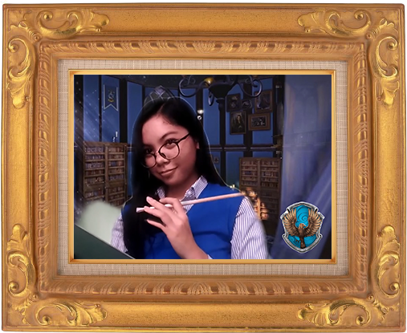
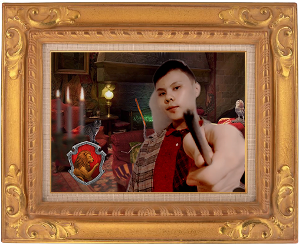
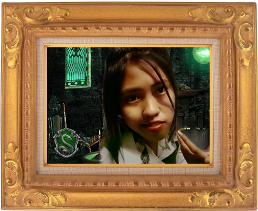

“We may encounter many defeats but we must not be defeated.” — Maya Angelou


Back to menu
End journey
Autobiography of Merry Rose Q. Migraso
My name is Merry Rose Quijano Migraso. I was born on 2nd of February 2003 in Paglaum Camaman-an Cagayan de Oro City and I am now 17 years old. My mother is Meraflor Quijano Migraso and my father is Edgardo Bagongon Migraso. I have 2 siblings named Jade Quijano Migraso and Shendy Quijano Migraso. I live Paglaum Camaman-an Cagayan de Oro City. My name 'Merry Rose' was chosen by my grandmother in mother side.
These are some of my personalities, I am a very soft hearted person specially to someone who is suffering and needed a help, I am also caring, loving, humble. Sometimes I'm also funny only to those people I am comfortable with. I am helpful, understanding and respectful. I have those good personalities because my parents taught us that we should be like that. I am also a shy type. I really don't talk too much to someone I am not comfortable with and my attitude depends on who you are, like if you show me your bad attitude, I will show mine too.
I love to eat chocolate and gummy candies, I also love to read in Wattpad every time I am alone. I like to sleep. I like to chitchat with my friends especially if we are complete. I also like to bond with my family and friends because bonding with them makes my day. I like things that make me happy. I don't like bitter gourd because it's bitter.
My family is one of a kind, they are my strength, they are my inspiration, they are my everything. For me my family is already perfect even though there is no perfect thing in the world. My family is special, just by seeing their smile it makes me smile too. My family loves to bond, we usually hang out every weekend. With my best friends, we also love to bond, they also mean a lot to me. Every time when I’m with my family and friends, I feel so safe.
A memorable event in my life was my christening day because I cried a lot when a stranger carried me. Also when I was in 8th grade that was Christmas party, my parents told me to sing but I did not agree, I was really shock when the host called my name and I was like 'I am not prepared'. They were all looking at me so I grab the microphone and started singing the song that my parents had chosen. When the song started playing, I got mental block, I can’t remember the tune of the song. I badly wanted to run but I can't so I continued singing even though I can't remember the tune and that was so embarrassing.
I will share to you some of my hobbies which are watching movies, reading, singing, and dancing. I am not an athletic person but I do play badminton. My goals in life are to finish studying, to be successful, to have a happy family and to travel. I want to return all the sacrifices and hard work of my parents and I really hope that I can accomplish all my goals in life with God’s plan.